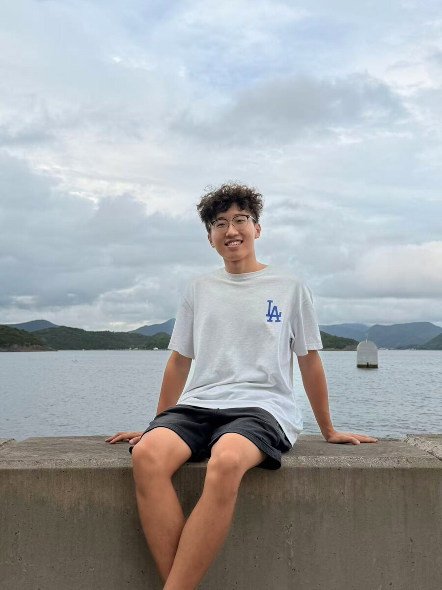

Hello, I'm
Yipeng Zhu
Second-year PhD Student at HKUST ISD
I study omnidirectional perception, 3D vision, and underwater robotics.

01
About
Hi, I'm Yipeng Zhu, a second-year PhD student in the Division of Integrative Systems and Design (ISD) at the Hong Kong University of Science and Technology (HKUST). I am supervised by Prof. Sai-Kit Yeung. I received my master's degree from HKUST in 2024 and my bachelor's degree from Harbin Institute of Technology, Shenzhen, in 2022. My research focuses on omnidirectional perception, 3D vision, and underwater robotics. I am currently working on computer vision and perception for underwater robotic systems.
02
Publications
APVI-SLAM: Real-Time Acoustic-Pressure-Visual-Inertial Localization and Photorealistic Mapping System in Complex Underwater Environment
A real-time multi-sensor fusion SLAM system for robust underwater localization and photorealistic 3D Gaussian mapping.
03
Contact
I am interested in research on wide-FoV sensing, spatial intelligence, and robotic perception.
yipeng.zhu2022@gmail.com